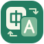

A LITTLE CLOSER, IN EVERY WORD.
中文与英文之间，留住每一分原意。
另一种语言，同样的意思
YOUR WORDS, CONNECTED.
连接 DeepSeek，开始你的第一段翻译。
只需填写并保存一次，以后启动会自动使用。
可直接填写 DeepSeek 支持的模型 ID。
轻量思考，兼顾翻译速度与准确性。
密钥由 Windows 加密保存在本机，仅用于连接 DeepSeek。